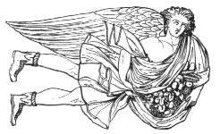

What Is a Pulsar?
A pulsar is a rapidly rotating neutron star — the collapsed core left behind after a massive star explodes as a supernova. Neutron stars pack roughly one to two times the mass of the Sun into a sphere only about 20 kilometers across, making them among the densest objects known to exist.
As the neutron star spins, it emits beams of electromagnetic radiation from its magnetic poles. Because the magnetic axis is usually misaligned with the rotation axis, those beams sweep around like a lighthouse. If one of the beams crosses Earth's line of sight, we detect a regular pulse of radiation — hence the name "pulsar," short for "pulsating radio star."
Pulsars were discovered in 1967 by Jocelyn Bell Burnell and Antony Hewish, who initially nicknamed the first signal "LGM-1" (Little Green Men) because its precise, repeating pulse seemed almost too regular to be natural.
Key Characteristics
| Property | Typical Value |
|---|---|
| Spin period | ~1.4 milliseconds to 10+ seconds |
| Diameter | ~20 km |
| Mass | ~1.4 solar masses |
| Magnetic field | Trillions of times stronger than Earth's |
| Emission type | Radio, X-ray, or gamma-ray (varies by object) |
| Timing precision | Rivals atomic clocks |
Why Pulsars Matter
- Cosmic clocks: Millisecond pulsars are so regular they are used to test general relativity and to search for gravitational waves via pulsar timing arrays.
- Interstellar navigation: Their predictable pulses have been proposed — and used, on the Pioneer and Voyager plaques — as a kind of celestial map marker.
- Extreme physics labs: Their densities and magnetic fields let physicists study matter under conditions impossible to recreate on Earth.
- Binary systems: Some pulsars orbit companion stars, letting astronomers measure mass, gravity, and orbital decay with extraordinary precision.
Archive Notes: Recovered Iconography
The recurring glyph attached to this signal does not match any cataloged constellation marker. It has instead been provisionally matched to a figure from Greek myth: Astraeus, Titan of the dusk and the stars, husband of Eos (the Dawn) and father of the Anemoi (the winds) and the Astra Planeti — the "star gods," an early mythic name for the visible planets.
Whether the association is coincidence, a naming convention chosen by whoever first logged the source, or something else entirely, is unresolved. It is included here for reference only.
